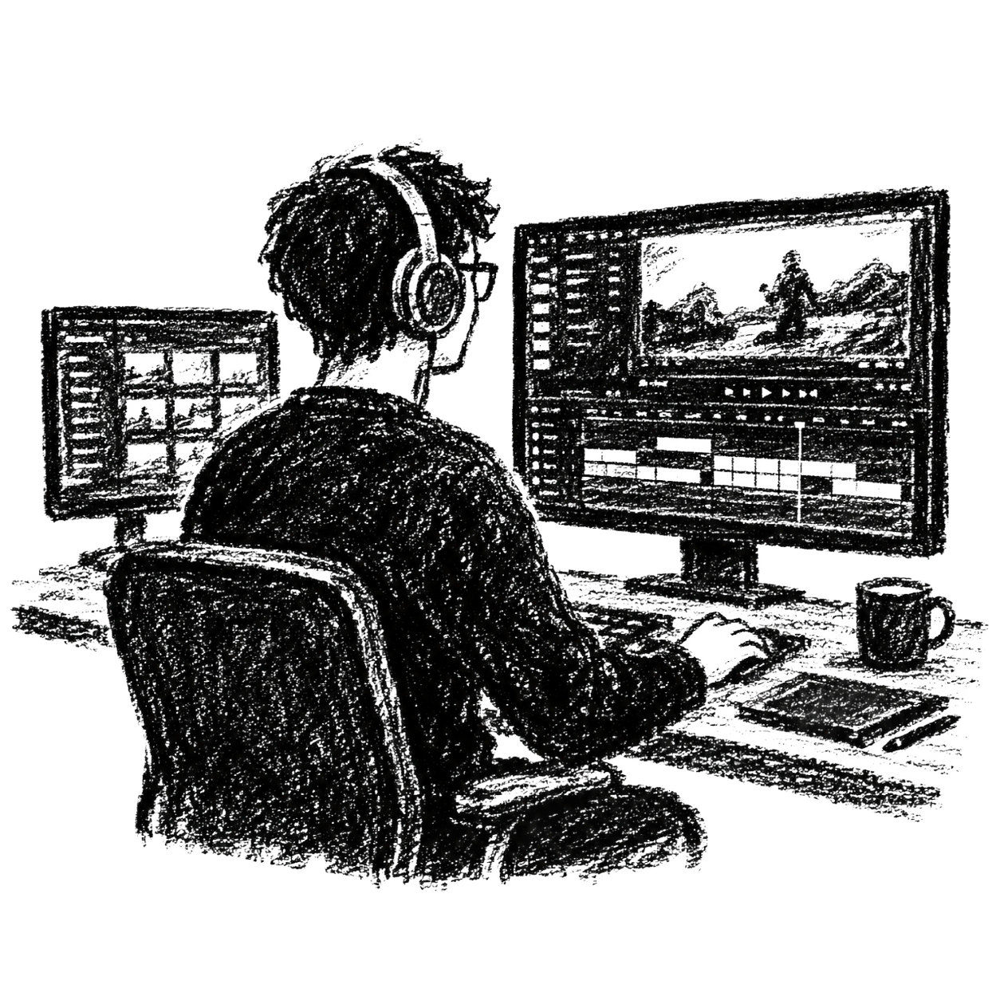

결과물로 증명하는 편집자
화려한 수식어보다 확실한 디테일과 약속 이행으로 신뢰할 수 있는 협업 파트너가 되겠습니다.

포트폴리오 및 단가 안내
카테고리를 클릭하면 상세 페이지로 이동합니다.
롱폼 작업물
브이로그, 테크 제품 리뷰, 시네마틱 감성 영상 등 몰입도 높은 와이드 와이드스크린 편집 작업물입니다. 정교한 컷 편집과 사운드 디자인을 확인해 보세요.
페이지 이동
숏폼 작업물
유튜브 쇼츠, 인스타그램 릴스 등 빠른 템포와 1분 미만의 강렬한 세로형 숏폼 영상입니다. 핵심 정보 전달과 반응 속도를 극대화한 편집 포맷을 제안합니다.
페이지 이동
합리적인 단가
분당 편집비, 초과 원본 영상 등 합리적으로 정리된 투명한 견적 테이블입니다. 수정 횟수, 썸네일 추가 제작 등의 상세한 협업 가이드를 안내해 드립니다.
페이지 이동
* 작업물은 포트폴리오로 활용 될 수 있습니다.